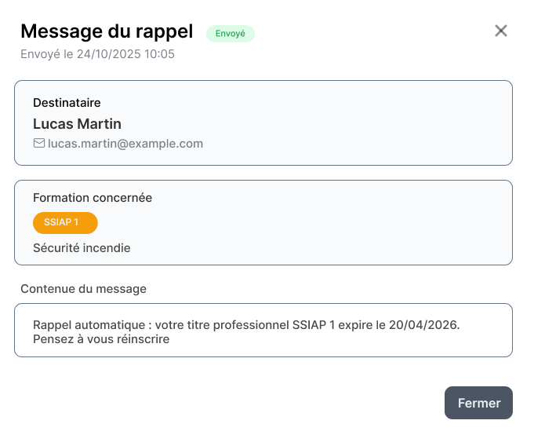

Je façonne des applications web robustes et des expériences fluides.
Étudiante en fin d'études de BUT MMI (Parcours Développement Web et Dispositifs Interactifs) à l'IUT de Troyes. J'allie l'ingénierie rigoureuse de l'architecture back-end à la finesse des détails front-end et de l'ergonomie.
Étudiante en BUT3 parcours développement web et dispositifs interactifs
BUT3 DWD — IUT Troyes
GitHub: @niniallx
PROFIL TECHNIQUE
Développement & UX/UI.
Actuellement en dernière année de BUT Métiers du Multimédia et de l'Internet, je me concentre sur la création d'architectures applicatives durables, de la conception à la mise en ligne.
Ma double expertise me permet d'intervenir à la fois sur l'architecture de bases de données et la logique serveur (Symfony 7, PHP, MYSQL) et sur le développement d'interfaces fluides et ergonomiques en s'appuyant sur des composants modernes (Vue.js 3, Tailwind CSS).
Symfony 7Vue.js 3API REST & JWTDocker
RÉALISATIONS PROFESSIONNELLES & ACADÉMIQUES
Mes Projets
Consulter l'étude de cas
SYS. Rappel
Stage BUT3 · Terminé
Plateforme de relance et suivi
RJ10 Rappel
Application de rappel automatique pour le renouvellement des certifications professionnelles.
API Rest & GraphQL avec double authentification sécurisée.
Explorer le dossier
WR602D — S6
Micro-services & Stripe
Découpage applicatif et intégration d'abonnements Stripe tiers.
Explorer le dossier
RJ10 Rappel — Gestion automatisée
Application de suivi d'échéances et de notifications automatisées de renouvellement développée chez RJ10 Formation.
Schéma du cycle de développement (Cliquer sur les étapes ci-dessous pour voir le code et les livrables)
Étape 01
Modélisation & DB (SQL)
Étape 02
Design & UX (Figma)
Étape 03
Architecture Code (PHP)
Étape 04
Résultat Final (Vue.js 3)
01 — Contexte
Dans le cadre de ma troisième année de BUT Métiers du Multimédia et de l'Internet (MMI) à l'IUT de Troyes, j'ai effectué un stage de neuf semaines au sein de RJ10 Formation, un centre de formation aux métiers de la sécurité situé à La Chapelle-Saint-Luc. J'ai travaillé en totale autonomie sur ce projet, ce qui m'a demandé une organisation rigoureuse et une grande capacité à prendre des décisions seule.
02 — La mission
Le centre utilisait Digiforma pour gérer ses documents administratifs. Malgré sa richesse, cet outil ne permettait pas de relancer automatiquement les anciens stagiaires lorsque leur titre professionnel approchait de sa date d'expiration. Ma mission était donc de concevoir et développer de A à Z une application web de gestion de rappels automatiques connectée pour fidéliser la clientèle du centre.
Traces de développement (Cliquer pour zoomer et voir l'explication latérale)

COMMANDE CODE
Noor — Suivi de santé féminine et spirituel
Application web de suivi de santé féminine avec accompagnement spirituel et culturel personnalisé.
Schéma du cycle de développement
Étape 01
User Flow & Concept
Étape 02
Maquette Figma
Étape 03
Développement Logique (Pinia)
Étape 04
Application PWA
03 — Comment fonctionne Noor
Noor est une application web progressive (PWA). L'API REST sous Symfony 7 traite les calculs physiologiques complexes de prédiction de cycle, tandis que l'interface construite sous Vue.js 3 offre un rendu asynchrone instantané des compteurs et calendriers culturels et spirituels personnalisés.
L'application est en ligne à l'adresse suivante : Noor App.
Interface de l'application Noor (Cliquer pour zoomer)
STORE CODE
Analyse pour la soutenance
Utilisez les flèches gauches/droites de votre clavier pour naviguer.